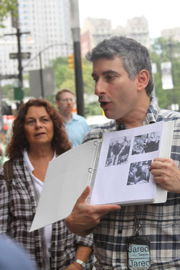

Destinations » Jared The NYC Tour Guide®'s tours for the Autism Spectrum Disorders Community!
 Touring with Autism and Asperger Syndromes can be fun.
Touring with Autism and Asperger Syndromes can be fun.
I have done NYC Tours with several young adults and children with Aspergers and Autism disorders. Their tours were customized and FUN!
I have a great time touring with youth with Spectrum Disorders. Youth with Aspergers, Autism, and ADD tend to be sweet, engaged and brainy on tours.
Spectrum Parents cope and hope. While on tour we can be with your kid at his or her best. The whole family can have a good time, and parents get a nice break.
I work with parents to customize tours for their unique youths. The result: experience something enjoyable and memorable.
Cihldren with ASD love facts, details, and getting really into it! So do I! Working with Asperger and Austistic youths gets me to become an expert in a topic, and it gets me to relate to unique people in in new ways.
I continually read up, speak with educators, and seek college courses relevant to touring in NYC with Spectrum Disorders.
Who would think that Austic and Asperger youth would love touring New York City? It is true. Even with New York City's noisy cacophony and delirious kaleidoscope of images, motion, and stimuli it takes knowing what interests your child to create an interesting tour.
Here are some real Great Tours with Real Autistic and Asperger Youths that I have conducted recently (2011-2012).
The Martial Artist:
A young man with Aspergers loves Martial Arts and Asian Cultures. He loves the contemplative nature of Asian culture, its nobility, and the focus that martial arts provides. He also likes the community, and the action that he can participate in, or just watch and share passion with other enthusiasts.
His parents sent him to me for a tour of Chinatown's living cultures. We had vegetarian food at a place that I chose. We experienced Manhattan's largest indoor Buddha, and we visited the studio of one of the world's most famous martial artists.
We had a great time, and the tour is still unforgettable for him.
Enthusiastic Boys:
A mother took her eleven year-old boy with somewhat severe autism on my tour of 42nd Street. He took my hand and away we all went!
It was nice for his mom not to have him hanging on her neck and needing to engage him all the time. I showed him things and places. We had a lot of smiles and enthusiasm.
We went to an exhibit at the public library, and he enjoyed looking at the train tracks at Grand Central.
When I wasn't with him, I paid careful attention to his very patient and loving mainstream brother.
Basketball! Streetball and Harlem hoops:

'My autistic son is crazy about basketball. He has the strange notion that people are playing basketball on every corner of Harlem! Is Harlem safe? Can we take him and his autistic friends on a tour of NYC Basketball?'
We went on two tours.
Before embarking his mother and I worked out the tours, and I provided her with learning resources to share with her son to prepare for his tour.
The first tour oriented them to where they were staying in Brooklyn. (They were staying near the Helen Keller School, and I recounted how Keller's great teacher reached her and how far Keller went in her lifetime.)
We went to a couple of local basketball courts in Brooklyn, and we ended up in the famous "Cage" in Greenwich Village. The boy did his research and knew all about it. He was in awe being there.
The second basketball tour started at Madison Square Garden's Hall of Fame for some college and pro Hoops history, as well as photo opportunities.
For both tours, I prepared fact sheets with pictures as a souvenir, and because these kids are so bright and curious, they love information!
Then we went to Harlem's famous "Rucker" playground where many stars were born and legends played, such as Kareem Abdul Jabaar and Dr. J. I am glad his parents followed my advice and bought him a basketball at one of the stores I recommended.
As we approached the playground, he said that he was 'living his dream.'
This very young man, 8th Grade, from a country that I will call Benelux, played streetball with Harlem kids, for hours!
I had to go eventually, but he was involved in a one-on-one game. His parents made him say goodbye to me. It was quick and annoyed. He didn't want to interrupt his one-on-one game, and he was a bit embarrassed about his entourage. His parents were embarrassed by his manner, and they were about to stop the game and pull him aside for a proper farewell.
I told them with utmost sincerity that his curt good-bye was one of the greatest compliments I ever got as a tour guide. He LOVED the tour which made his dream come true.
Touring in NYC with Aspergers and Autism can be fun, informative, and memorable.
Jared The NYC Tour Guide®Goldstein is a certified Adult Trainer. His studies in educating youth with Asperger and ASD are ongoing so they and their families can have great tours of NYC.